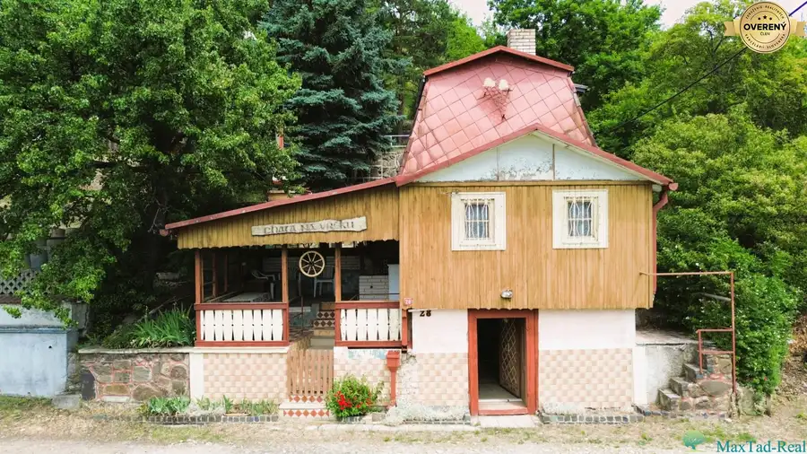
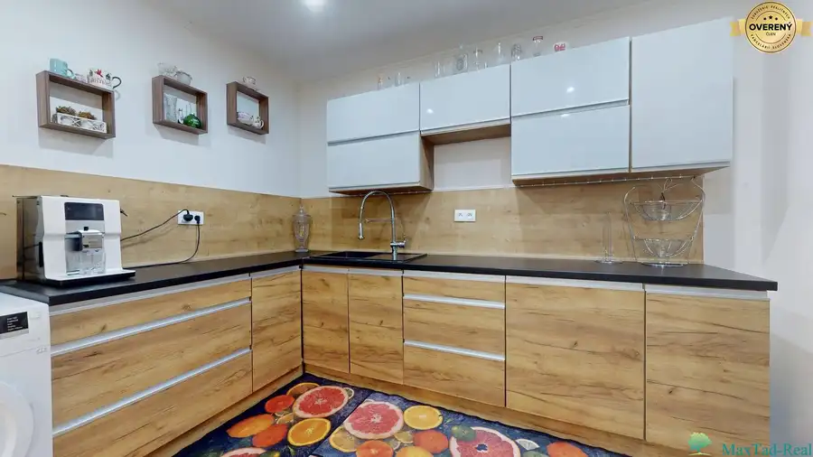
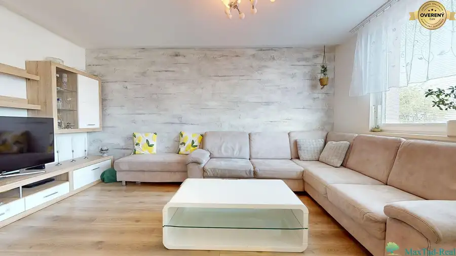

Prvorepubliková vila s pozemkom 5 114 m² v centre Trebišova.
Trebišov
- Dispozícia5-izbový
- Plocha134.5 m²
- Poschodie0. z 2
- Stavpôvodný
- Vlastníctvoosobné
O nehnuteľnosti
Niektoré nehnuteľnosti sa predávajú pre to, čím sú dnes. Táto sa predáva pre to, čím sa môže stať.
V širšom centre Trebišova ponúkame na predaj unikátnu prvorepublikovú vilu situovanú na rozľahlom pozemku s výmerou 5 114 m². Ide o nehnuteľnosť, ktorú pozná väčšina Trebišovčanov a ktorá už desaťročia patrí k výrazným stavbám mesta.
Samotná vila je určená na rekonštrukciu, no ponúka zachované proporcie a architektonické prvky typické pre obdobie prvej republiky. Výška stropov približne 3,2 metra na prízemí a 3 metre na poschodí vytvára vzdušný priestor s atmosférou, ktorú v moderných stavbách nájdete len zriedka.
Dispozícia domu pozostáva z prízemia s výmerou 76 m² a poschodia s výmerou 58,6 m². K dispozícii je WC na oboch podlažiach a kúpeľňa na poschodí.
Dominantou poschodia je veľkorysá terasa s výmerou približne 15 m². Práve ona dodáva vile jej jedinečný charakter. Je to miesto, ktoré si človek zapamätá hneď pri prvej návšteve – priestor ako stvorený na rannú kávu, večerné posedenia alebo jednoducho na vychutnávanie atmosféry domu, ktorý má svoj príbeh. Takéto terasy sa dnes už takmer nestavajú.
Za vilou sa nachádzajú hospodárske budovy a zadná časť pozemku je po celej dĺžke ohraničená murovaným plotom smerom od železničnej stanice. Samotný pozemok s orientačnými rozmermi približne 81 × 55 metrov ponúka veľkorysý priestor nielen pre komfortné bývanie, ale aj pre investičné zámery.
Budúci majiteľ môže vytvoriť reprezentatívne rodinné sídlo s rozsiahlym súkromným areálom, prestavať vilu na štýlový penzión, sídlo firmy alebo spojiť rekonštrukciu historickej budovy s ďalším rozvojom územia. Poloha v blízkosti autobusovej a železničnej stanice zároveň prináša výbornú dostupnosť a zvyšuje potenciál celého projektu.
Táto nehnuteľnosť nie je len domom a pozemkom. Je to príležitosť získať kus histórie Trebišova a zároveň priestor pre vlastnú víziu do budúcnosti.
Ak ste niekedy premýšľali nad tým, že by ste vlastnili jednu z najznámejších víl v meste, možno práve teraz prichádza vaša posledná príležitosť. Podobný pozemok s historickou vilou v centre Trebišova už s veľkou pravdepodobnosťou nikdy nevznikne.
Pre viac informácií a osobnú obhliadku ma neváhajte kontaktovať.
Blažej Mikuláško,
Parametre
| Rozloha pozemku | 4483 m² |
|---|---|
| Zastavaná plocha | 631 m² |
| Celková rozloha | 5114 m² |
| Úžitková plocha | 134.5 m² |
| Poschodie | prízemie |
| Počet poschodí | 2 |
| Počet izieb | 5 |
| Vlastníctvo | osobné |
| Stav | pôvodný |
| Voda | studňa |
| El. napätie | 230/400V |
| Plyn | áno |
| Kanalizácia | áno |
| Internet | lokálny poskytovateľ |
| Kúpeľňa | áno |
| Vykurovanie | vlastné |
| Terasa | áno |
| Pivnica | áno |
| Garáž | áno |
| Výťah | nie |
| Parkovanie | áno |
| Postavené z | tehla |
| Zariadenie | čiastočne |
| Zateplený objekt | nie |
| Strecha | pôvodná |
| Bazén | interiérový |
| Krb | áno |
| Klimatizácia | nie |
| Káblová televízia | nie |
| Energetický certifikát | nie |
| Predzáhradka | áno |
| Bezbariérový prístup | nie |
| Okná | drevené |
| Orientácia | južná |
| Prístupová cesta | asfaltová cesta |
| Dátum zverejnenia | 10. 6. 2026 |
Kde to je
Mohlo by Vás zaujímať

Chaty a chalupy10 49 000 €Chata na vršku– miesto, kam nevyjde každý. A práve preto má svoje čaro Vinné 2-izbový37.23 m² Sú ľudia, ktorí hľadajú modernú novostavbu s bazénom a wellnessom. A potom sú tí, ktorí chcú miesto s atmosférou, pokojom a pocitom, že na chvíľu…
Rodinné domy10 171 600 €Rodinný dom s veľkým pozemkom pri Michalovciach – priestor pre rodinu. Lastomír 5-izbový126.3 m² Hľadáte miesto, kde budú mať vaše deti viac priestoru než len jednu izbu navyše? Miesto, kde sa ráno nebudíte do ruchu mesta, ale zároveň máte všetko…
Byt10 141 800 €Budúce bývanie za dnešnú výhodnú cenu Michalovce 3-izbový68 m²5. podlažie Táto ponuka je ideálna pre investora alebo kupujúceho, ktorý nepotrebuje bývať okamžite, ale chce si už dnes zabezpečiť kvalitný byt na jednej z…